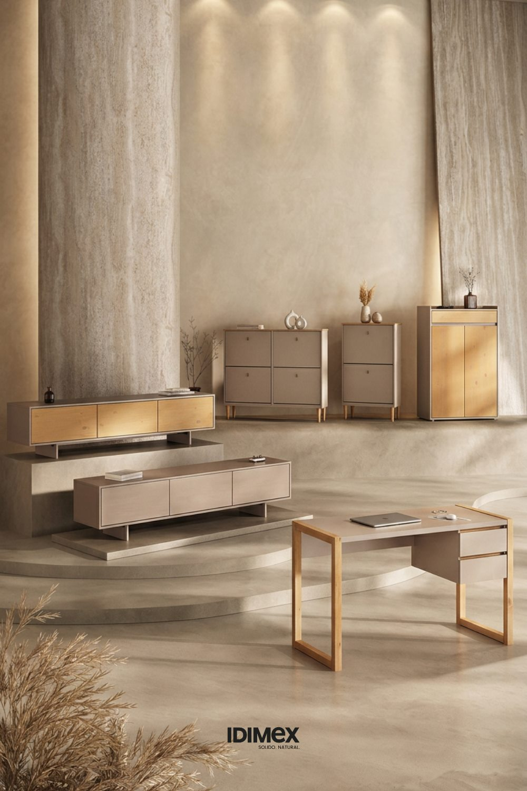
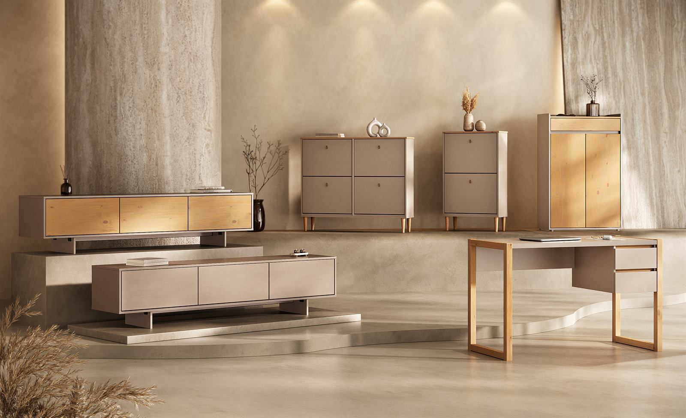

Lançamentos IDIMEX
Linha Fendi Cashmere IDIMEX | Móveis de Madeira Maciça com Design
A Linha Fendi Cashmere IDIMEX une madeira maciça, tons neutros e design moderno para criar ambientes mais leves, organizados e sofisticados. Conheça móveis para sala, home office e organização da casa.

A escolha das cores tem um papel importante na forma como a casa é percebida. Tons claros, neutros e sofisticados ajudam a criar ambientes mais leves, modernos e fáceis de combinar.
A Linha Fendi Cashmere IDIMEX nasce com essa proposta: unir móveis de madeira maciça de pinus, design funcional e uma paleta contemporânea para quem busca organização, beleza e durabilidade em diferentes ambientes da casa.
O acabamento Fendi/Cashmere valoriza uma estética suave, elegante e atual. É uma combinação pensada para salas, quartos, halls de entrada, home offices e espaços de circulação que precisam de funcionalidade sem excesso de informação visual.
O que é a Linha Fendi Cashmere IDIMEX?
A Linha Fendi Cashmere IDIMEX reúne móveis com acabamento em tons neutros, pensados para compor ambientes modernos, acolhedores e visualmente equilibrados.
O Fendi traz profundidade e sofisticação. O Cashmere adiciona leveza, suavidade e uma sensação mais clara ao ambiente. Juntos, criam uma composição elegante, fácil de combinar com madeira, tecidos naturais, paredes claras, decoração minimalista e elementos contemporâneos.
Mais do que uma escolha de cor, a linha reforça a proposta da IDIMEX de criar móveis de madeira maciça de pinus com design moderno, funcionalidade e confiança na compra online.
Por que escolher móveis em Fendi Cashmere?
Os móveis em Fendi Cashmere são indicados para quem deseja uma casa mais leve, organizada e atual.
Essa combinação de cores oferece vantagens importantes:
- combina facilmente com diferentes estilos de decoração;
- ajuda a ampliar visualmente ambientes compactos;
- cria sensação de limpeza e organização;
- valoriza salas, quartos, halls e escritórios;
- conversa bem com tons naturais, madeira, branco, bege, cinza e preto;
- oferece um visual moderno sem depender de modismos passageiros.
É uma escolha especialmente interessante para quem deseja sair dos tons tradicionais de madeira sem abrir mão da presença e da qualidade dos móveis IDIMEX.
Design moderno com madeira maciça
Na IDIMEX, o design moderno não significa apenas aparência. Ele também precisa resolver a rotina.
Por isso, os móveis da Linha Fendi Cashmere unem estética contemporânea com funções reais: guardar calçados, organizar objetos, apoiar o trabalho, estruturar a sala de TV e melhorar o uso dos espaços.
A madeira maciça de pinus continua sendo parte da essência da marca. Ela traz estrutura, presença e sensação de durabilidade. Já o acabamento Fendi/Cashmere atualiza a leitura visual do móvel, deixando a peça mais leve, sofisticada e fácil de integrar aos ambientes.
O resultado é uma linha feita para quem busca móveis bonitos, funcionais e pensados para permanecer.
Sapateiras Fendi Cashmere: organização com leveza visual
A organização da casa começa pelos espaços de entrada, quartos e áreas de passagem. Sapateiras bem escolhidas ajudam a reduzir a bagunça visual e tornam a rotina mais prática.
A Sapateira Horizontal 24 Pares Madeira Fendi Cashmere 4 Portas Calçados 42 Mikka, da IDIMEX, é uma opção para quem precisa organizar muitos pares em um móvel de proporção horizontal, ideal para quartos, halls maiores ou espaços onde o móvel também pode funcionar como apoio visual.
Já a Sapateira Multiuso Vertical 2 Portas Calçados até 45 Cashmere Fendi 74 cm Tilo, da IDIMEX, é indicada para quem busca aproveitamento vertical, organização e uma presença mais compacta no ambiente.
Para espaços menores ou corredores, a Sapateira Estreita Vertical 2 Portas Madeira 12 Pares Cor Cashmere Fendi Tamanho 44 Mikka, da IDIMEX, oferece uma solução mais estreita e funcional, ideal para quem precisa organizar sem ocupar tanta largura.
Essas opções mostram como a Linha Fendi Cashmere pode atender diferentes necessidades de organização, desde casas com maior volume de calçados até ambientes compactos.
Home office Fendi Cashmere: trabalho com estética leve
O home office precisa ser funcional, mas também precisa ser agradável. Uma mesa de trabalho bem escolhida ajuda a organizar a rotina, acomodar materiais e criar um espaço mais confortável para concentração.
A Mesa Home Office 120 cm Cashmere Fendi Madeira 2 Gavetas Belinda, da IDIMEX, é uma opção para quem busca uma escrivaninha moderna, com largura funcional e gavetas para organizar itens de trabalho ou estudo.
O acabamento Cashmere/Fendi ajuda a deixar o ambiente mais leve, especialmente em quartos, escritórios compactos ou espaços integrados à sala. É uma escolha interessante para quem deseja produtividade sem abrir mão da harmonia visual.
Rack Fendi Cashmere: sala de TV moderna e organizada
Na sala de estar, o rack precisa equilibrar três funções: apoiar a composição da TV, organizar objetos e valorizar o ambiente.
A Linha Fendi Cashmere traz opções para quem busca um rack moderno, fechado e visualmente limpo.
O Rack Sala Fendi Moderno 184 cm Madeira TV 75 Cashmere 3 Portas Arto, da IDIMEX, é indicado para salas que precisam de um móvel amplo, com portas e visual contemporâneo para TVs de até 75 polegadas.
Outra opção da linha é o Rack TV 75 Madeira Cashmere Sala 184 cm 3 Portas Fendi Arto, da IDIMEX, que reforça a mesma proposta de sala organizada, moderna e com acabamento em tons neutros.
Os racks de 184 cm são boas escolhas para quem deseja proporção equilibrada com TVs maiores, mantendo espaço interno para objetos, eletrônicos, controles, livros e itens do dia a dia.
Como combinar móveis Fendi Cashmere na decoração
A Linha Fendi Cashmere combina bem com diferentes estilos de decoração, especialmente ambientes modernos, naturais, minimalistas e contemporâneos.
Para valorizar essa paleta, combine com:
- paredes claras ou em tons neutros;
- tapetes em bege, areia, off-white ou cinza claro;
- tecidos naturais, como linho e algodão;
- elementos em madeira;
- detalhes em preto para contraste;
- plantas e objetos com textura;
- iluminação quente e acolhedora.
A principal vantagem do Fendi/Cashmere é criar uma base neutra, mas não fria. O ambiente ganha leveza, sem perder sofisticação.
Para quais ambientes a Linha Fendi Cashmere é indicada?
A Linha Fendi Cashmere IDIMEX é indicada para diferentes ambientes da casa:
- sala de estar;
- sala de TV;
- quarto adulto;
- hall de entrada;
- corredores;
- home office;
- espaços compactos;
- ambientes integrados.
A variedade de móveis permite criar uma casa mais coordenada, com a mesma linguagem visual em diferentes cômodos.
Sapateiras organizam a rotina. Escrivaninhas estruturam o trabalho e o estudo. Racks valorizam a sala. Juntos, esses móveis ajudam a construir uma casa mais funcional, moderna e visualmente equilibrada.
Conclusão
A Linha Fendi Cashmere IDIMEX foi criada para quem busca móveis de madeira maciça com design moderno, acabamento neutro e alta funcionalidade.
Com opções para organização, home office e sala de TV, a linha ajuda a criar ambientes mais leves, sofisticados e práticos para a rotina.
Na IDIMEX, a madeira maciça de pinus se une ao acabamento Fendi/Cashmere para entregar móveis com presença, qualidade visual e proposta de durabilidade.
Porque uma casa moderna não precisa ser fria. Ela pode ser leve, funcional, acolhedora e feita para durar.
Perguntas frequentes
O que é a Linha Fendi Cashmere IDIMEX?
É uma linha de móveis IDIMEX com acabamento em tons Fendi e Cashmere, pensada para ambientes modernos, neutros, leves e funcionais.
Fendi Cashmere combina com quais estilos de decoração?
Combina com estilos moderno, minimalista, natural, contemporâneo e escandinavo, além de ambientes com tons claros, madeira e decoração neutra.
Móveis Fendi Cashmere deixam o ambiente mais claro?
Sim. Por serem tons neutros e suaves, ajudam a criar uma sensação visual mais leve e organizada, especialmente em espaços compactos.
A Linha Fendi Cashmere tem móveis para quais ambientes?
A linha conta com opções para sala de TV, home office, quarto, hall de entrada e espaços de organização.
Os móveis Fendi Cashmere são de madeira maciça?
A Linha Fendi Cashmere IDIMEX segue a proposta da marca de valorizar móveis de madeira maciça de pinus, com design funcional, acabamento moderno e compra segura. Verifique sempre a descrição técnica de cada produto na página do item.